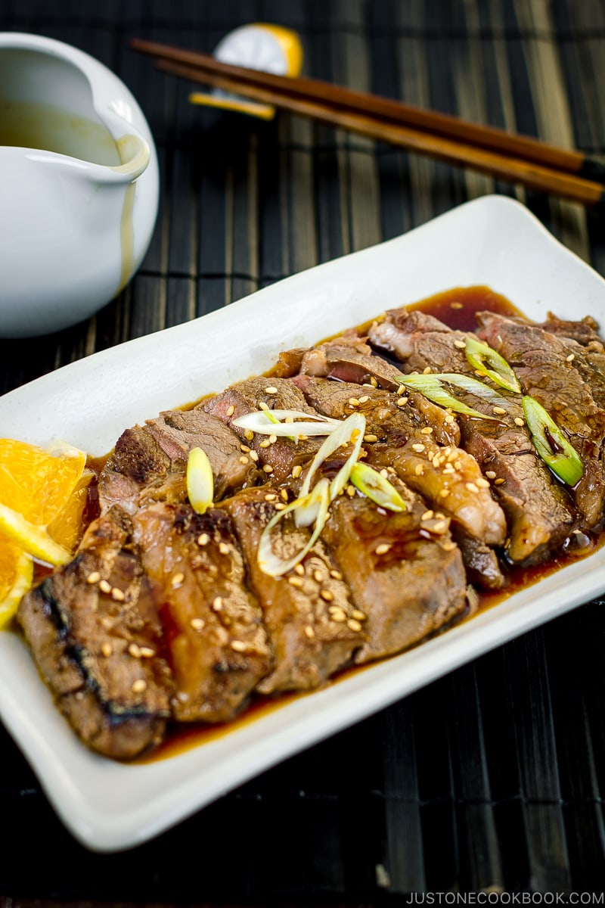

Beef teriyaki

What is Beef Teriyaki?
Thin ribeye steaks marinated with teriyaki seasoning, then pan-sear them until slightly charred.
Ingredients
- beef ribeye steaks – each ½ inch, 1.25 cm thick
- neutral oil – to cook the steaks
- Japanese soy sauce, sake, mirin, sugar, and fresh ginger juice (from grated ginger) – for the sauce and marinade
- green onion/scallion and toasted white sesame seeds – for the garnish
- optional potato starch or cornstarch and water – for a slurry to thicken the sauce, if you wish
Steps
- Mix the teriyaki sauce ingredients in a bowl. Mix well to dissolve the sugar.
- Marinate the steaks in some of the teriyaki sauce for 30 minutes in the fridge.
- Bring the steaks to room temperature before cooking and pat them dry with a paper towel.
- Heat the teriyaki sauce in a large pan and simmer for 15 seconds. (For an optional thick sauce, add a starch slurry and whisk until thickened.) Remove from the heat and set aside.
- Cooks the steaks in a preheated cast-iron skillet or frying pan over medium-high heat.
- Pour the teriyaki sauce over the steaks. The sauce gets bubbly and gives the steaks a nice glaze.
- Remove the steaks to a plate before the sauce starts to burn. Rest the steaks for 5–10 minutes before serving.